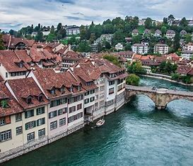

Europe
The best places to visit in Europe will take you through the continent’s amazing range of historic and modern cities, impressive architecture and sights, and breathtaking landscapes from Paris to Prague. Wander cobblestone streets with medieval character, dine in Michelin-starred restaurants and tasty street food stalls, tour world-famous museums and galleries, and invigorate yourself with luxe beaches and mountain settings sprawling across the European continent. It’s easy to plan your European itinerary when you’re clued into the most interesting destinations to visit. Here’s a list of the 15 best places to visit in Europe!
It has four main linguistic and cultural regions: German, French, Italian and Romansh. Although most Swiss are German-speaking, national identity is fairly cohesive, being rooted in a common historical background, shared values such as federalism and direct democracy,[22] and Alpine symbolism.[23][24] Swiss identity transcends language, ethnicity, and religion, leading to Switzerland being described as a Willensnation ("nation of volition") rather than a nation state.[25]